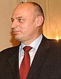
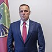
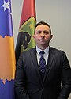

Ministria e Mbrojtjes e Kosovës është një nga ministritë e Kosovës e cila merret me menagjimin e Forcave të Armatosura të Kosovës, aseteve dhe misioneve të saj jashtë vendit. Ministria e ka selinë në Prishtinë, me Ejup Maqedoncin si ministër i mbrojtjes në detyrë në kabinetin e dytë të Albin Kurtit.
Forca e armatosur e Kosovës është Forca e Sigurisë së Kosovës. Presidenti mban titullin e komandantit të përgjithshëm të ushtrisë. Shtetasit mbi moshën 18 vjeçare kanë të drejtë të shërbejnë në Forcën e Sigurisë së Kosovës. Anëtarët e forcës mbrohen nga diskriminimi në bazë të gjinisë ose përkatësisë etnike. Organizata e Traktatit të Atlantikut të Veriut (NATO) e udhëhequr nga Forca e Kosovës (KFOR) dhe Trupat Mbrojtëse të Kosovës (TMK) në vitin 2008, filluan përgatitjet për formimin e Forcës së Sigurisë së Kosovës. Në vitin 2014, ish-kryeministri Hashim Thaçi deklaroi se Qeveria Kombëtare kishte vendosur që në vitin 2019 të themelojë Ministrinë e Mbrojtjes dhe ta transformojë zyrtarisht Forcën e Sigurisë së Kosovës në Forca të Armatosura të Kosovës, një ushtri e cila do t'i plotësonte të gjitha standardet e anëtarëve të NATO-s, pra synimi për t'iu bashkuar aleancës në të ardhmen. Në dhjetor të vitit 2018, Kuvendi i Kosovës ndryshoi me ligj[2][3] mandatin e Forcës së Sigurisë së Kosovës dhe e shndërroi atë në ushtri.[2][4] Ajo gjithashtu krijoi këtë Ministri të Mbrojtjes.
| Lista e ministrave | Emri | Kabineti | Partia |
|---|---|---|---|
|  | Agim Çeku | Thaqi III | PSD |
| Haki Demolli | Mustafa | LDK | |
|  | Ejup Maqedonci | Kurti II | I pavarur |
| Anton Quni | Kurti | LDK | |
|  | Armend Mehaj | Kurti II | VV |